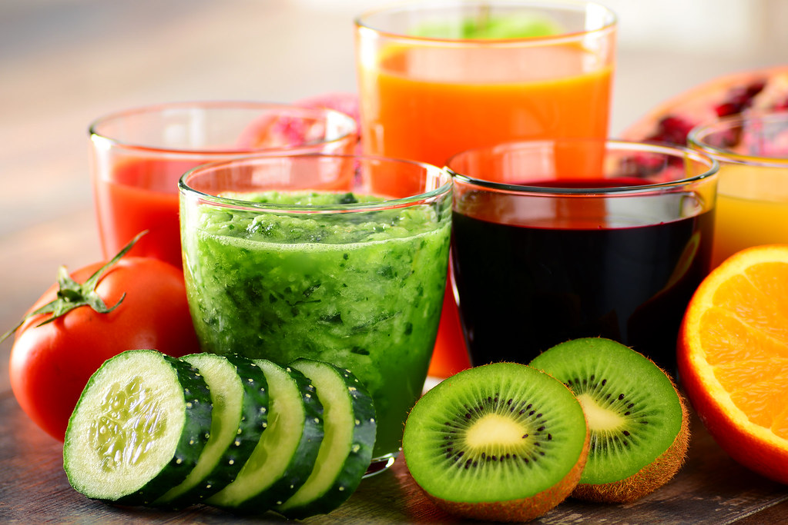

Bountiful Foods

Welcome to Bountiful Foods
California Coast
Bountiful Foods is located in Carlsbad, California. We pride ourselves in having the freshest produce along the coast! We have multiple food trucks that are located along the coast of California. A few places are San Diego, Los Angeles and San Fransisco. You can also visit us at the Santa Monica Pier. After a long day of surfing, you can find a refreshing treat at Bountiful Foods. You can chose from one of our smoothies or create your own. Come by and create an amazing treat made from the freshest produce!
